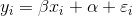
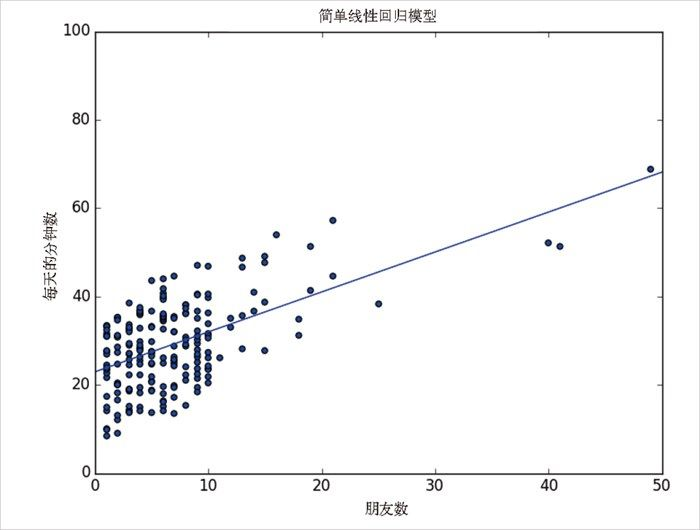

14.1 模型
别忘了，我们正在探讨的是 DataSciencester 用户的朋友数量与其每天花在该网站上的时间之间的关系。我们假设，你已经说服自己结交的朋友越多会导致人们花在网站上的时间越长。
这时，参与部的副总要你建立一个模型来描述这种关系。既然你发现有很强的线性关系，那么自然就要从线性模型开始着手了。准确地说，假设有常数 α （alpha） 和 β （beta），使得：

其中，yi 是用户 i 每天花在网站上的分钟数，xi 是用户 i 已有的朋友数，而 εi 是误差项，用来表示这个简单模型没有考虑到的其他因素，当然，误差项越小越好。
只要我们求出 alpha 和 beta ，就能轻松通过下列公式来进行预测了：
def predict(alpha, beta, x_i):
return beta * x_i + alpha
那么，该如何选择 alpha 和 beta 呢？实际上，只要任意选定的 alpha 和 beta 值，对于每个输入 x_i ，都能得到一个预测的输出值。由于知道实际输出值 y_i ，因此可以计算它们的误差：
def error(alpha, beta, x_i, y_i):
"""the error from predicting beta * x_i + alpha
when the actual value is y_i"""
return y_i - predict(alpha, beta, x_i)
实际上，我们真正想知道的是整个数据集的总体误差情况。不过，我们不能简单地将各个误差加起来，这是因为，如果 x_1 预测得太高，而 x_2 预测得太低，那么它们的误差加在一起就会相互抵消了。
因此，我们要对误差的平方 求和：
def sum_of_squared_errors(alpha, beta, x, y):
return sum(error(alpha, beta, x_i, y_i) ** 2
for x_i, y_i in zip(x, y))
我们可以通过最小二乘法 来选择 alpha 和 beta ，以使 sum_of_squared_errors 尽可能小。
利用微积分（或单调乏味的代数），我们就可以求出令误差最小化的 alpha 和 beta 了，具体代码如下所示：
def least_squares_fit(x, y):
"""given training values for x and y,
find the least-squares values of alpha and beta"""
beta = correlation(x, y) * standard_deviation(y) / standard_deviation(x)
alpha = mean(y) - beta * mean(x)
return alpha, beta
不要忙着进行严格的数学推导，让我们先想想为什么这可能是一个合理的解决方案。实际上，选定 alpha 后，只要给出自变量 x 的平均值，我们就能预测因变量 y 的平均值。
选定了 beta ，就意味着输入值每增加 standard_deviation(x) ，预测值就会增加 correlation(x, y) * standard_deviation(y) 。就本例来说，如果 x 和 y 完全相关，则 x 每增加一个标准偏差，预测值就会增加 y 的一个标准偏差。当它们完全负相关的时候，预测值会随着 x 的增加而减小 。当它们的相关性为 0 时，beta 为 0，这意味着 x 的变化根本不会对预测值产生影响。
下面我们使用第 5 章中的异常值数据来计算这两个值：
alpha, beta = least_squares_fit(num_friends_good, daily_minutes_good)
计算结果是，alpha = 22.95，beta = 0.903。因此，根据我们的模型来看，具有 n 个好友的用户每天会在这个网站上花 22.95 + n * 0.903 分钟。同时，对于在 DataSciencester 上面没有朋友的用户来说，他们每天仍然会花 23 分钟泡在这个网站上。此外，用户每增加一个朋友，每天花费在这个网站上的时间就会多出一分钟左右。在图 14-1 中，我们绘制了该模型的预测线，从中可以看出模型的预测与观测数据的拟合效果。

图 14-1：简单线性模型
当然，仅仅依靠目测是不够的，我们需要一个更好的指标来评估模型对数据的拟合效果。一个常见的指标是决定系数 （coefficient of determination）或 R 平方 ，用来表示纳入模型的自变量引起的变动占总变动的百分比：
def total_sum_of_squares(y):
"""the total squared variation of y_i's from their mean"""
return sum(v ** 2 for v in de_mean(y))
def r_squared(alpha, beta, x, y):
"""the fraction of variation in y captured by the model, which equals
1 - the fraction of variation in y not captured by the model"""
return 1.0 - (sum_of_squared_errors(alpha, beta, x, y) /
total_sum_of_squares(y))
r_squared(alpha, beta, num_friends_good, daily_minutes_good) # 0.329
现在，我们已经选取了令预测误差平方和最小化的 alpha 和 beta 。我们选择的是一个“总是预测 mean(y) ”的线性模型（即 alpha = mean(y) 且 beta = 0 ），模型误差平方和正好等于其平方总和。这就意味着拟合优度（R 平方）的值为 0，表明模型（显然，在这种情况下）几乎只能预测平均值。
很明显，最小二乘模型最差的时候，就是误差的平方和最大 为平方总和的时候，也是 R 平方最小为 0 的时候。同时，因为误差的平方和至少为 0，所以 R 平方至多为 1。
R 平方的值越大，说明模型对数据的拟合度越高。在这里，R 平方的值为 0.329，说明模型对这些数据的拟合度不是很高，显然还有没考虑到的其他因素在起作用。